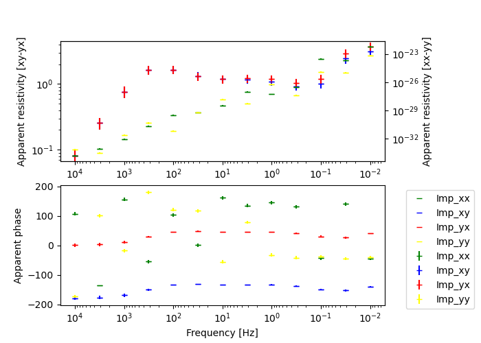

Note
Click here to download the full example code
MT: 3D: Forward¶
Forward model 3D MT data.
Test script to use SimPEG.NSEM platform to forward model impedance and tipper synthetic data.
- 
Out:
/usr/share/miniconda/envs/deploy/lib/python3.7/site-packages/pymatsolver/direct.py:26: PardisoTypeConversionWarning:
Converting csc_matrix matrix to CSR format, will slow down.
/usr/share/miniconda/envs/deploy/lib/python3.7/site-packages/pymatsolver/direct.py:73: PardisoTypeConversionWarning:
Converting csc_matrix matrix to CSR format, will slow down.
/home/vsts/work/1/s/SimPEG/utils/code_utils.py:413: FutureWarning:
freq has been deprecated, please use frequency. It will be removed in version 0.16.0 of SimPEG.
/home/vsts/work/1/s/SimPEG/utils/code_utils.py:413: FutureWarning:
freq has been deprecated, please use frequency. It will be removed in version 0.16.0 of SimPEG.
/home/vsts/work/1/s/SimPEG/utils/code_utils.py:413: FutureWarning:
freq has been deprecated, please use frequency. It will be removed in version 0.16.0 of SimPEG.
/home/vsts/work/1/s/SimPEG/utils/code_utils.py:413: FutureWarning:
freq has been deprecated, please use frequency. It will be removed in version 0.16.0 of SimPEG.
/home/vsts/work/1/s/SimPEG/utils/code_utils.py:413: FutureWarning:
freq has been deprecated, please use frequency. It will be removed in version 0.16.0 of SimPEG.
/home/vsts/work/1/s/SimPEG/utils/code_utils.py:413: FutureWarning:
freq has been deprecated, please use frequency. It will be removed in version 0.16.0 of SimPEG.
/home/vsts/work/1/s/SimPEG/utils/code_utils.py:413: FutureWarning:
freq has been deprecated, please use frequency. It will be removed in version 0.16.0 of SimPEG.
/home/vsts/work/1/s/SimPEG/utils/code_utils.py:413: FutureWarning:
freq has been deprecated, please use frequency. It will be removed in version 0.16.0 of SimPEG.
/home/vsts/work/1/s/SimPEG/utils/code_utils.py:413: FutureWarning:
freq has been deprecated, please use frequency. It will be removed in version 0.16.0 of SimPEG.
/home/vsts/work/1/s/SimPEG/utils/code_utils.py:413: FutureWarning:
freq has been deprecated, please use frequency. It will be removed in version 0.16.0 of SimPEG.
/home/vsts/work/1/s/SimPEG/utils/code_utils.py:413: FutureWarning:
freq has been deprecated, please use frequency. It will be removed in version 0.16.0 of SimPEG.
/home/vsts/work/1/s/SimPEG/utils/code_utils.py:413: FutureWarning:
freq has been deprecated, please use frequency. It will be removed in version 0.16.0 of SimPEG.
/home/vsts/work/1/s/SimPEG/utils/code_utils.py:413: FutureWarning:
freq has been deprecated, please use frequency. It will be removed in version 0.16.0 of SimPEG.
/home/vsts/work/1/s/SimPEG/utils/code_utils.py:413: FutureWarning:
freq has been deprecated, please use frequency. It will be removed in version 0.16.0 of SimPEG.
/home/vsts/work/1/s/SimPEG/utils/code_utils.py:413: FutureWarning:
freq has been deprecated, please use frequency. It will be removed in version 0.16.0 of SimPEG.
/home/vsts/work/1/s/SimPEG/utils/code_utils.py:413: FutureWarning:
freq has been deprecated, please use frequency. It will be removed in version 0.16.0 of SimPEG.
import discretize
from SimPEG.electromagnetics import natural_source as NSEM
from SimPEG import utils
import numpy as np
import matplotlib.pyplot as plt
try:
from pymatsolver import Pardiso as Solver
except:
from SimPEG import Solver
def run(plotIt=True):
"""
MT: 3D: Forward
===============
Forward model 3D MT data.
"""
# Make a mesh
M = discretize.TensorMesh(
[
[(100, 9, -1.5), (100.0, 13), (100, 9, 1.5)],
[(100, 9, -1.5), (100.0, 13), (100, 9, 1.5)],
[(50, 10, -1.6), (50.0, 10), (50, 6, 2)],
],
x0=["C", "C", -14926.8217],
)
# Setup the model
conds = [1, 1e-2]
sig = utils.model_builder.defineBlock(
M.gridCC, [-100, -100, -350], [100, 100, -150], conds
)
sig[M.gridCC[:, 2] > 0] = 1e-8
sig[M.gridCC[:, 2] < -1000] = 1e-1
sigBG = np.zeros(M.nC) + conds[1]
sigBG[M.gridCC[:, 2] > 0] = 1e-8
if plotIt:
collect_obj = M.plotSlice(np.log10(sig), grid=True, normal="X")[0]
color_bar = plt.colorbar(collect_obj)
# Setup the the survey object
# Receiver locations
rx_x, rx_y = np.meshgrid(np.arange(-600, 601, 100), np.arange(-600, 601, 100))
rx_loc = np.hstack(
(utils.mkvc(rx_x, 2), utils.mkvc(rx_y, 2), np.zeros((np.prod(rx_x.shape), 1)))
)
# Make a receiver list
rxList = []
for rx_orientation in ["xx", "xy", "yx", "yy"]:
rxList.append(NSEM.Rx.Point3DImpedance(rx_loc, rx_orientation, "real"))
rxList.append(NSEM.Rx.Point3DImpedance(rx_loc, rx_orientation, "imag"))
for rx_orientation in ["zx", "zy"]:
rxList.append(NSEM.Rx.Point3DTipper(rx_loc, rx_orientation, "real"))
rxList.append(NSEM.Rx.Point3DTipper(rx_loc, rx_orientation, "imag"))
# Source list
srcList = [
NSEM.Src.Planewave_xy_1Dprimary(rxList, freq) for freq in np.logspace(4, -2, 13)
]
# Survey MT
survey = NSEM.Survey(srcList)
# Setup the problem object
problem = NSEM.Simulation3DPrimarySecondary(
M, survey=survey, solver=Solver, sigma=sig, sigmaPrimary=sigBG
)
# Calculate the data
# data = problem.make_synthetic_data(relative_error=0.1, add_noise=True)
data = NSEM.Data(survey=survey, dobs=problem.dpred())
# Add standard deviation to the data - 10% relative error and 0 floor
data.relative_error = 0.1
data.noise_floor = 0.0
# Add plots
if plotIt:
# Plot the data
# On and off diagonal (on left and right axis, respectively)
fig, axes = plt.subplots(2, 1, figsize=(7, 5))
plt.subplots_adjust(right=0.8)
[(ax.invert_xaxis(), ax.set_xscale("log")) for ax in axes]
ax_r, ax_p = axes
ax_r.set_yscale("log")
ax_r.set_ylabel("Apparent resistivity [xy-yx]")
ax_r_on = ax_r.twinx()
ax_r_on.set_yscale("log")
ax_r_on.set_ylabel("Apparent resistivity [xx-yy]")
ax_p.set_ylabel("Apparent phase")
ax_p.set_xlabel("Frequency [Hz]")
# Start plotting
ax_r = data.plot_app_res(
np.array([-200, 0]), components=["xy", "yx"], ax=ax_r, errorbars=True
)
ax_r_on = data.plot_app_res(
np.array([-200, 0]), components=["xx", "yy"], ax=ax_r_on, errorbars=True
)
ax_p = data.plot_app_phs(
np.array([-200, 0]),
components=["xx", "xy", "yx", "yy"],
ax=ax_p,
errorbars=True,
)
ax_p.legend(bbox_to_anchor=(1.05, 1), loc=2)
if __name__ == "__main__":
do_plots = True
run(do_plots)
if do_plots:
plt.show()
Total running time of the script: ( 1 minutes 54.359 seconds)
Estimated memory usage: 1036 MB